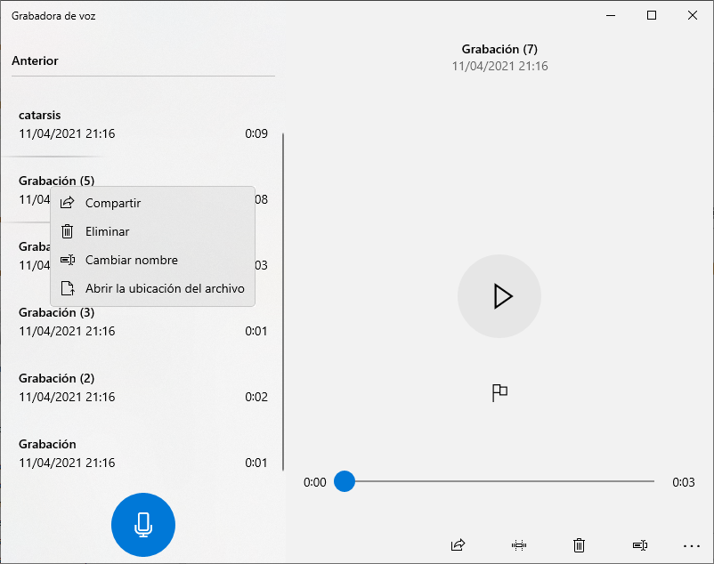

Cuando se deja de utilizar el ordenador, lo aconsejable es apagarlo para que no siga consumiendo recursos. Sin embargo, hay otras opciones que nos permiten ahorrar energía sin tener que apagarlo del todo.
Apagar
Seleccionar: Inicio y, a continuación,  y Apagar.
y Apagar.
Cuando apagamos el equipo, este se cierra totalmente, lo que quiere decir que finalizan todas las tareas, programas, archivos en ejecución y todo lo que estemos realizando. Por eso, si hemos dejado algo abierto antes, puede que nos pregunte si realmente queremos cerrarlo.
Es la opción idónea si no vamos a usar el ordenador durante un largo periodo de tiempo. También es útil para solucionar de forma rápida cualquier problema de rendimiento. Por eso, en muchos de los problemas que se dan con los ordenadores una de las soluciones frecuentes es apagarlo y volver a encenderlo.
La opción de apagar la podemos encontrar al pulsar el botón de Inicio de Windows y luego la opción Inicio/Apagado. En ocasiones, podrá aparecer una opción adicional Actualizar y Apagar, si el equipo tiene pendiente alguna actualización.
También encontramos la opción de Apagar al pulsar la combinación de teclas Windows + X o esta otra CTRL+ALT+SUPR.
Suspender
Seleccionar Inicio y, a continuación,  y Suspender.
El PC entra en un modo de consumo de energía mínimo para mantener la memoria RAM encendida, ya que esta guarda el estado del sistema para poder volver a las ventanas y aplicaciones abiertas anteriormente. Esto permite que al volver a la actividad todo se encuentre tal cual lo dejamos.
El modo suspensión es una buena opción cuando vamos a tomarnos breves descansos y queremos retomar la actividad exactamente dónde lo habíamos dejado.
Por otro lado, es recomendable suspender el equipo en caso de que este esté conectado a la corriente eléctrica o se tenga la seguridad de que no se va a consumir la batería, porque si no se corre el riesgo de que se cierre todo bruscamente y afecte al ordenador de algún modo.
Para acceder a esta opción se procede de forma similar que con Apagar. Pulsando el botón Inicio o Windows+X o CTRL+ALT+SUPR. En algunos teclados también suele existir una tecla para realizar esta acción.
En caso de disponer de un portátil, estos entran automáticamente en este modo tan pronto como cerramos la tapa.
Configuración adicional de energía
Inicio y, a continuación, elija Configuración > Sistema > Energía y suspensión > Configuración adicional de energía.
Aquí podemos elegir el comportamiento de los botones de encendido o de suspensión del teclado o, en el caso de un portátil, qué acción debe realizarse al bajar la tapa del mismo.
También nos permite activar la opción de Hibernar que, por defecto, no nos aparece en el menú de Inicio/Apagado.
Hibernar
Si hemos activado esta opción en Configuración Adicional de Energía, nos aparecerá en Inicio y, a continuación,  .
.
Esta opción se ha diseñado para portátiles y puede que no esté disponible para todos los equipos. Cuando se lleva a cabo, el estado actual del equipo se guarda en el disco duro para que se recupere al encender. Cuando volvemos a encender el sistema nuevamente, se cargarán los datos del disco duro en la RAM para que podamos reanudar la sesión donde lo dejamos.
Es recomendable hibernar el PC cuando se va a dejar de utilizar por un largo período de tiempo, pero se quiere conservar lo que se estaba haciendo para no tener que esperar a que este vuelva a encenderse.
Hay que tener en cuenta que el modo hibernar no es tan efectivo como un verdadero apagado para limpiar la memoria RAM del ordenador, para que funcione de forma más rápida, Aunque pueda parecer similar, no es lo mismo que apagar o reiniciar por lo que no solucionará problemas de rendimiento. Tampoco es buena opción para hacer descansos breves de trabajo ya que el tiempo de arranque es más largo que el de suspensión.
Reiniciar
Inicio - - Reiniciar.
Reiniciar vacía la memoria y detiene todas las tareas que se están ejecutando, incluidas aquellas que podrían haberlo ralentizado temporalmente. Así, reiniciar el PC a menudo corrige fallos de software. Igualmente puede solucionar problemas de conexión a Internet y del Bluetooth.
Al igual que sucede con el apagado, cuando reiniciamos perdemos toda la información que no hayamos guardado previamente.